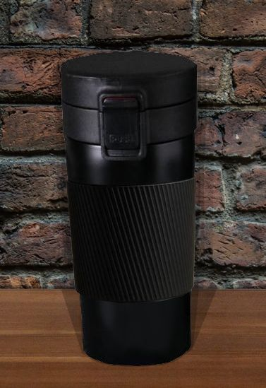

Вы работаете контент-менеджером интернет-магазина товаров для дома. Ваша задача — подготовить новую карточку товара к публикации.
В работу входит:- подобрать изображение;
- написать описание;
- оформить характеристики;
- продумать FAQ;
- сделать текст понятным покупателю.

Термокружка NordTrail Arctic 450 мл
Характеристики:
| Артикул | 129036503 |
| Материал колбы | нержавеющая сталь |
| Материал посуды | пластик; нержавеющая сталь; силикон |
| Объем товара | 450 мл |
| Особенности кружки | непроливайка; ударопрочный корпус; с крышкой |
Прочие характеристики:
| Сохраняет тепло до | 6 ч |
| Сохраняет холод до | 12 ч |
| Страна производства | Россия |
| Комплектация | Термокружка - 1 шт |
| Длина упаковки | 20 см |
| Высота упаковки | 10 см |
| Ширина упаковки | 10 см |
| Вес с упаковкой | 0.3 кг |
| Высота предмета | 17 см |
699 ₽
2000 ₽
Описание товара
Однажды мы решили создать идеальную термокружку, которую можно будет подарить любителю активного отдыха и занятому горожанину, жителю жаркого юга и холодного севера, автолюбителю и пешеходу. Так появилась наша самая популярная кружка NordTrail Arctic - удобная, стильная и долговечная. Благодаря двойным стенкам кружка подходит как для горячих, так и для холодных напитков. Компактный размер позволяет брать её в машину, офис или на прогулку.
- Кружка долго сохраняет температуру напитка, позволяя греться какао зимой и освежаться лимонадом летом;
- Узкое донышко подходит для большинства автомобильных подстаканников;
- Удобный размер - поместится в походный рюкзак, городской рюкзак и даже во вместительную дамскую сумочку;
- Внутренняя часть кружки выполнена из нержавеющей стали, безопасной для любых напитков;
- Крышка надёжно закрывается, сводя риск протекания на нет.
Вопрос-ответ
Кружка не обжигает руки?
Нет, наружная часть кружки сделана из пластика, поэтому её комфортно держать.
Пластик, из которого сделана кружка, безопасен для здоровья?
Да, в нашем производстве мы используем пищевой пластик.
Как избавиться от запаха пластика?
Слабый запах пластика может быть присущ новой кружке. Обычно он исчезает после нескольких промываний.
А будут кружки в других цветах?
Да. Мы работаем над моделями в красной, синей и розовой расцветках.
В оглавление